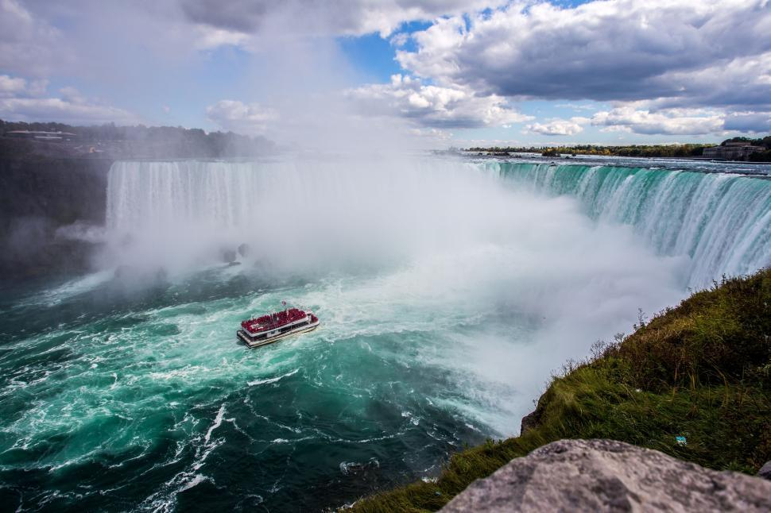
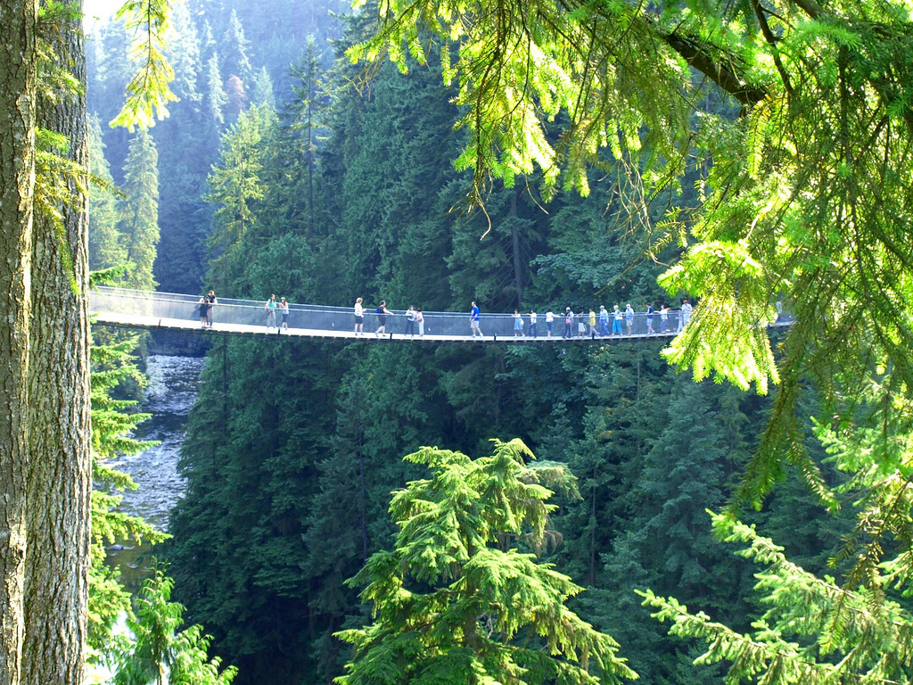

Niagara Falls
Niagara falls is a hotpot for tourists mainly due to its natural stunning view, and its easy accessibility to visit, especially for Canadian and American people.

Niagara falls is a hotpot for tourists mainly due to its natural stunning view, and its easy accessibility to visit, especially for Canadian and American people.

The popularity of Banff National Park stems from its natural beauty and wildlife, but it is also Canada's first ever National Park.

The Capilano Suspension Bridge Park is one of Vancouver's most iconic tourist attractions. The Bridge is located way above the Capilano river, stretching as far as 140 meters. Its accessibility is also very easy.

Jasper National Park is famous for it's rich wildlife experience, stunning glacial landscapes, and its wilderness experience.